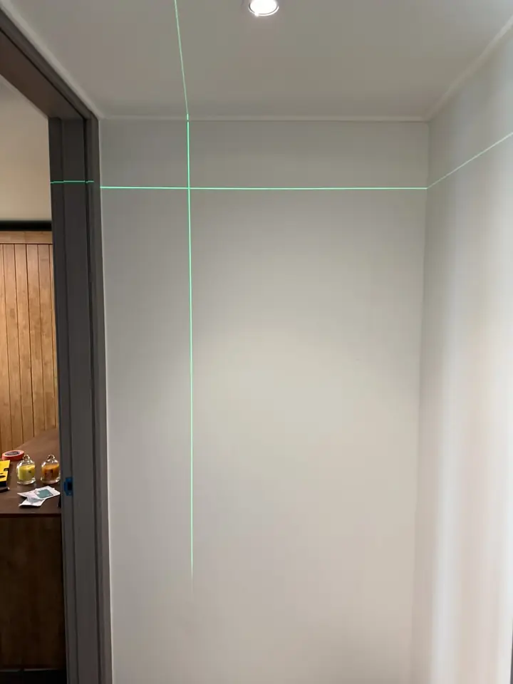
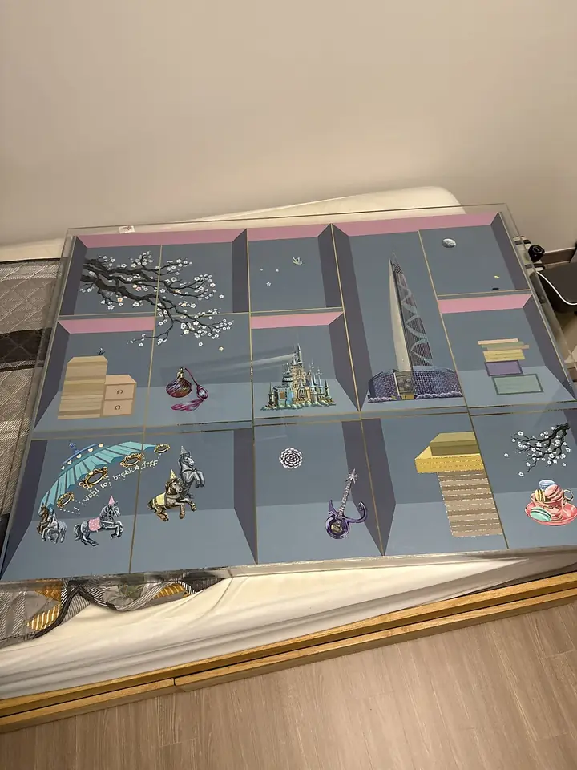
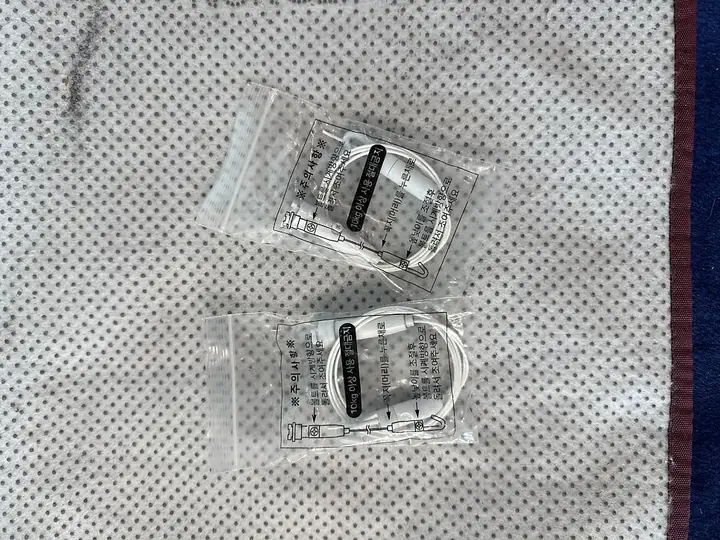
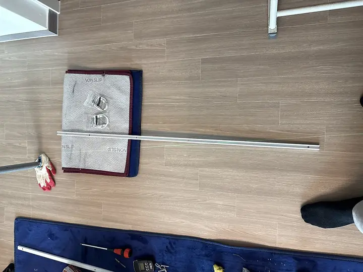
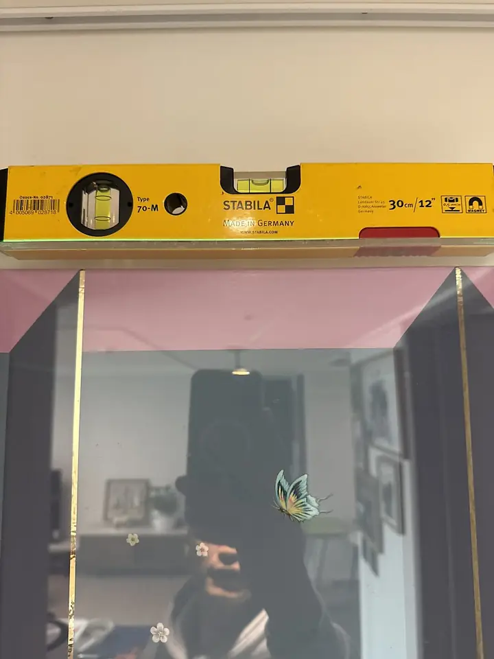
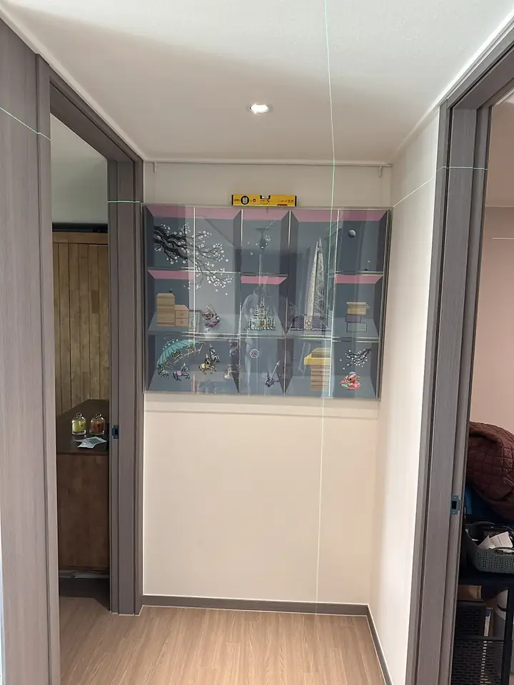

아크릴 액자 레일 설치, 벽면 손상 없이 큰 작품을 정확하게
타공을 여러 번 하기는 부담스럽고 큰 액자를 한 번에 정확하게 맞추고 싶다는 의뢰였습니다. 아크릴 작품 전용 레일을 설치했습니다.
위치를 가장 먼저 정확히 잡았습니다
레이저 수평기로 벽면 중심과 높이를 잡았고 천장 몰딩과 문틀 기준을 함께 보며 기준선을 맞췄습니다. 이 단계에서 위치가 틀어지면 전체가 어긋나 시간을 충분히 들였습니다.
아크릴 액자는 바닥에서 미리 준비했습니다
바닥에 보호 매트를 깔고 액자를 미리 확인한 뒤 와이어를 준비했습니다.
레일 기준으로 작품이 자리 잡았습니다
설치 후에는 레일을 기준으로 작품이 정확한 높이에 걸렸습니다. 양쪽 문틀과 간격도 맞고 시선이 자연스럽게 중앙으로 모였습니다.
시공 사진






아크릴 액자 레일 설치, 자주 묻는 질문
큰 아크릴 액자도 레일에 거나요?
이 현장은 아크릴 작품 전용 레일을 설치해 큰 액자를 걸었습니다.